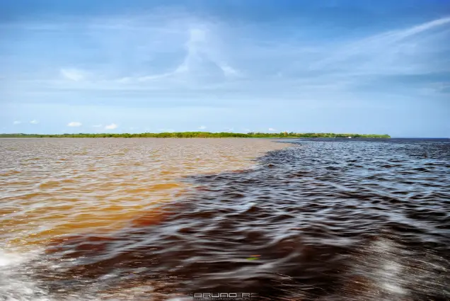
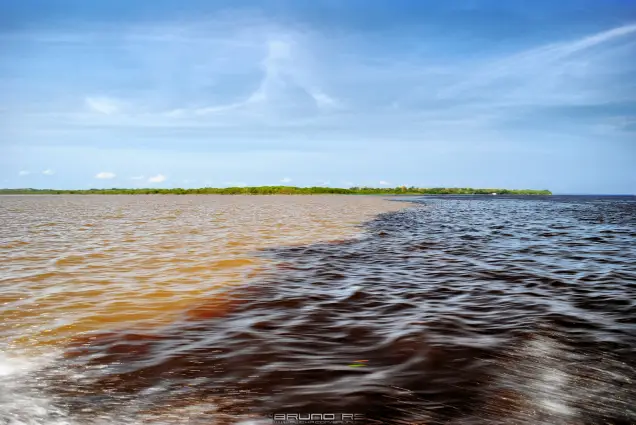

Encontro das Águas
O Encontro das Águas é um dos fenômenos naturais mais impressionantes do mundo, onde os rios Negro e Solimões correm lado a lado por cerca de 6 km sem se misturarem, devido às diferenças de temperatura, densidade e velocidade das águas. Durante os passeios de barco, é possível observar essa divisão clara e ainda apreciar a fauna local, como botos-cor-de-rosa e aves típicas da região. Além disso, muitos passeios incluem trilhas pela floresta e visitas a comunidades ribeirinhas para conhecer melhor a cultura local.